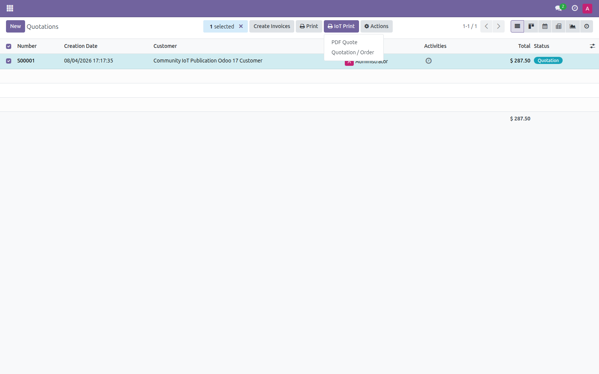
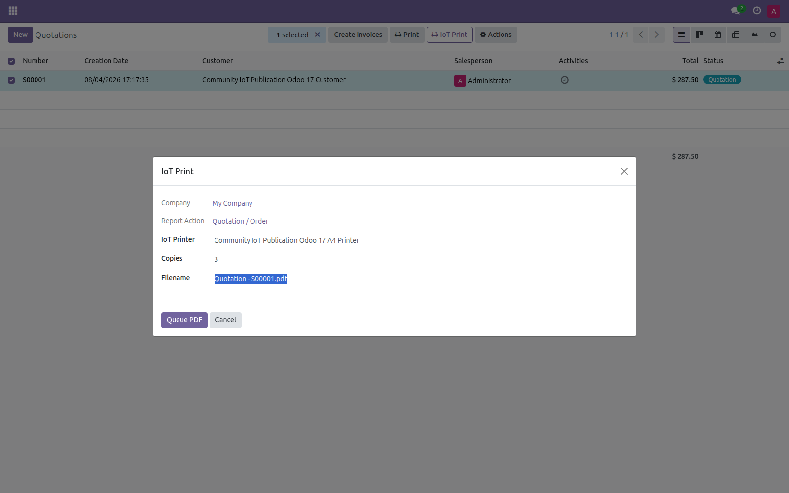
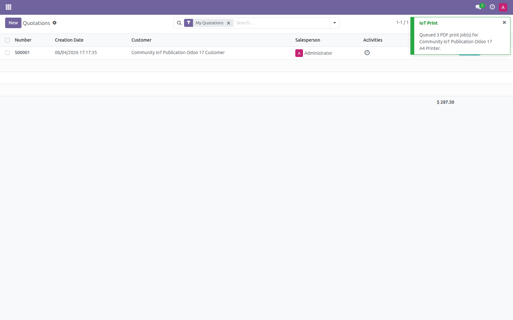

Dependency: IoT Box Community 17.0.5.0.0
Install and update IoT Box Community first. Community IoT Agent v0.4.0 is installed separately on the local host and is not bundled by this addon.
Dependencia: IoT Box Community 17.0.5.0.0
Instale y actualice primero IoT Box Community. Community IoT Agent v0.4.0 se instala por separado y este addon no lo incluye.
Community IoT Printing for Odoo 17
Send a QWeb PDF report through the separate IoT Print action to an online PDF-capable standard printer.
Separate print action
Select a quotation or order and open IoT Print without replacing Odoo's standard Print menu.
Controlled PDF jobs
Choose the standard printer, filename and 1–10 copies; each copy becomes an independent job.
Access-aware rendering
Reports use the current user's permissions, company, language and record rules.
PDF and agent specifications
Community IoT Printing adds a separate action for QWeb PDF reports and leaves Odoo's standard Print menu intact.
- Select one or more records from a form or list; up to 100 records are supported.
- Only an online, active, PDF-capable
standard_printeris selectable for the current company. - Copies are bounded from 1 to 10 and create independent jobs with their own retry/idempotency state.
- The PDF is stored temporarily as a protected attachment, downloaded by the locked job and removed when all copies finish.
- Linux/CUPS is the current publication evidence path; the agent URL, token and service configuration remain outside the addon.
Odoo QWeb PDF → IoT Print wizard → temporary job → Agent v0.4.0 → CUPS printer
Fresh Odoo 17 interface evidence
These images were captured from the current Odoo 17.0 branch in a temporary local database.



Compatibility
Odoo 17 Community · Private Odoo.sh projects · On-premise deployments · Requires IoT Box Community and Community IoT Agent v0.4.0.
Descripción en español
Encole reportes PDF QWeb desde el menú IoT Print de Odoo 17, eligiendo impresora estándar, nombre de archivo y de 1 a 10 copias.
El PDF se conserva temporalmente en un attachment protegido y se elimina al terminar todas las copias. El agente conserva su URL, token y servicio fuera del addon.
Las capturas corresponden únicamente a la rama Odoo 17.0 y muestran el menú, el asistente y la confirmación del trabajo encolado.